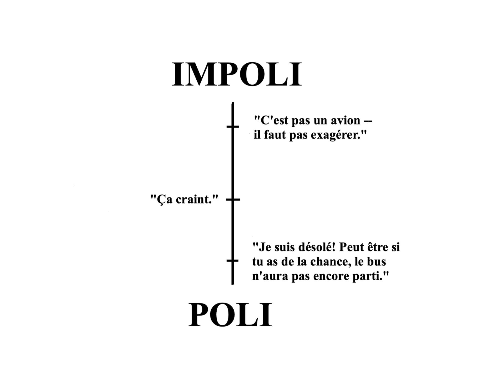
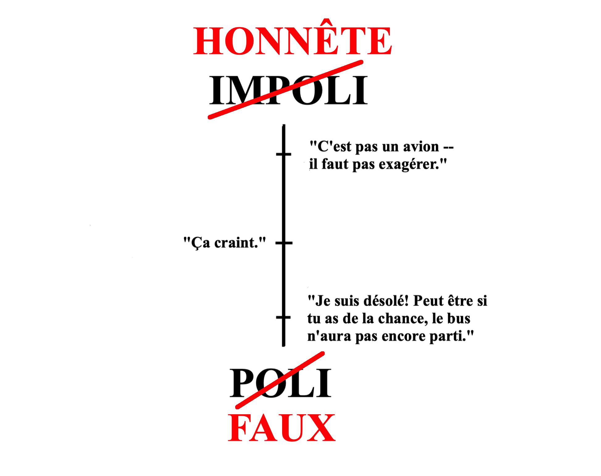

Pendant que j'étudiais en France, mon amie Cati a décrit la raison pour laquelle les français nous semblait impolis de temps en temps. Ce qui était impoli selon nous était honnête pour eux, et ce qui était poli selon nous était faux pour eux.
Bien sûr c'est une généralisation qu'on voit entre des personnalités aussi souvent qu'entre des cultures. Mais je l'ai vu après avoir acheté un billet de bus de Bruxelles à Paris
J'ai commandé un Uber à la gare routière, probablement dix minutes trop tard, et même avec un conducteur Uber qui faisait Jason Bourne, il semblait qu'on n'arriverait pas à l'heure. Il m'a interrompu quand j'ai commencé a me plaindre: "C'est pas un avion -- il faut pas exagèrer."
Le conducteur avait raison, mais ça m'a semblé un peut impoli. Il n'était pas français (il était un marocain vivant en Belgique qui s'appelait Akif), mais c'était exactement ce que Cati avait décrit.
Les américains verraient ça:
Mais Akif a vu ceci:
Tout çela m'a fait penser: à quel point la fausseté fait-elle partie de la politesse?
La politesse c'est le théâtre. C'est une performance qui rend les interactions sociales prévisibles et respectueuses, particulièrement entre les gens qui ne se connaissent pas bien. Elle n'est pas toujours véritables, mais juste comme nous acceptons des invraisemblances afin de profiter d'une jolie histoire, nous acceptons des invraisemblances pour que les interactions soient plus facile.
Un livre de Yuval Harari qui s'appelle Sapiens suggère que cette acceptation des inventions soit la grande innovation de notre espèce. Contrairement aux Neandertal, nous sommes capables de travailler avec des étrangers car nous croyons dans les mêmes fictions. Les gouvernements et l'argent n'existent pas réellement, mais en prétendant qu'ils existent on peut être assez sûr que les drogues du pharmacien marchent, que la nourriture du restaurant ne nous tuera, et cetera.
La politesse fonctionne dans la même manière: c'est une autre fiction qui facilite les interactions sociales. Donc, tandis qu'il y'a quelque chose qui n'est pas vrai dans la politesse, c'est l'interprétation -- pas la fausseté. Personne n'appellerait des acteurs sur une scène malhonnêtes.
Parfois, l'interprétation de la politesse s'effondre complètement. Quand les gens des cultures différentes ou personnalités différentes s'interagissent, c'est comme s'ils jouent avec deux scripts différents.
ACTE PREMIER
Scène I
(Dans une rue animée à Bruxelles, tôt dans le matin. Un jeune homme s'approche à un Audi noir.)
AKIF -- Danny?
DANNY -- Ouais, c'est me.
(Le jeune homme entre dans la voiture.)
Scène II
(Le Audi roule à toute vitesse vers une gare routière.)
DANNY -- J'ai déjà acheté le billet. J'aurais dû attendre jusqu'a ce que j'arrive. Ça m'a couté vingt euros.
AKIF -- Je suis désolé! Peut être si vous avez de la chance, le bus n'aura pas encore parti.
AKIF -- C'est pas un avion -- il faut pas exagèrer.
En fait, typiquement ce n'est pas que les gens jouent avec des scripts différents, mais plutôt qu'un entre eux ne sait pas qu'elle est dans une pièce.
Par exemple, il est très important qu'on dit "bonjour" quand on entre une établissement en France (et pas mal d'autres pays). Souvent, les américains voyagent, ne reconnaissent pas les caissiers, et puis se plaignent de l'impolitesse quand ils reçoivent la mauvaise service.
Quand on va à travers des cultures, on sait pas le script. On devient impoli (ou honnête?). Donc il faut garder en tête que la politesse est une fiction et il faut être généreux quand quelqu'un qui vient d'une culture différente t'agace.
31/05/19